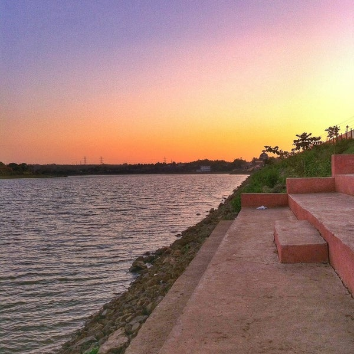
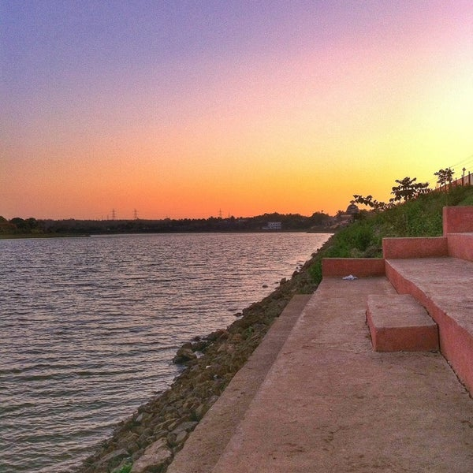
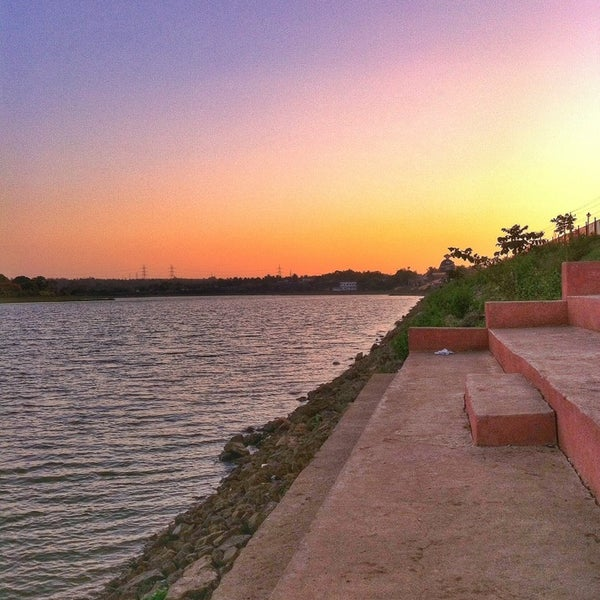

Dharwad also known as Dharwar, is a city located in the north western part of the Indian state of
Karnataka. It is the headquarters of the Dharwad district of Karnataka and forms a contiguous urban area
with the city
of Hubballi. It was merged with Hubballi in 1962 to form the twin cities of Hubballi-Dharwad. It covers
an area of 213 km2 (82 sq mi) and is located 430 km (270 mi) northwest of Bangalore, on NH-48, between
Bangalore and Pune.In 2016, Hubli-Dharwad was selected for solar city / green city master plans.In 2017,
government of India included Hubli-Dharwad city for a smart city project, a flagship scheme for overall
development of infrastructure in the twin-cities.
The Chalukyas ruled Dharwad during the 12th
century. A stone inscription indicates that there was a
ruler by the name of BhaskaraDeva in 1117. In the 14th century, the district was first overrun by the
Bahmani Sultanate, after which it was annexed to the newly established Hindu kingdom of Vijayanagar, an
official
of which named "Dhar Rao", according to local tradition, built the fort at Dharwad town in 1403. After
the defeat of the king of Vijayanagar in the Battle of Talikota (1565), Dharwad was for a few years
practically independent under its Hindu governor; but in 1573 the fort was captured by the sultan of
Bijapur, Adil Shah, and Dharwad was annexed to his dominions. Adil Shah built a fort in an area later
called Manna Killa,
and later Nazratabad. With this fort, the strategic importance of Dharwad increased and it attracted the
attention of subsequent conquerors, including Aurangzeb, Shivaji, Aurangzeb's son Bahadur Shah I, Peshwa
Balaji Baji Rao, Hyder Ali, Tipu Sultan and finally the British colonizers. In 1685, the fort was taken
bythe Mughal emperor Aurangzeb, and Dharwad, on the break-up of the Mughal empire, fell under the sway
of the Maratha Peshwa of Pune. In 1764, the province was overrun by Hyder Ali of
the Mysore, who in 1778 captured the fort of Dharwad. The fort was retaken in 1791 by the Marathas.
After the final defeat of the Peshwa by the British in 1818, Dharwar was incorporated into the territory
of the British East India Company's Bombay Presidency. During the early 19th century, when the British
were
expanding their domains, they faced a lot of opposition from local rulers, including Baba Saheb of
Nargund and Kittur Chennamma.
Main article: List of educational institutions in Dharwad
1) Indian Institute of Technology Dharwad (IIT Dharwad) in Belur Industrial Area (2016–2023)
IIT Dharwad permanent campus inaugurated in March 2023 Karnatak University Indian Institute of
Technology Dharwad (IIT Dharwad) - One of 23 IITs, it was established in 2016.
2) University of Agricultural Sciences, Dharwad Dharwad hosts many Universities, Colleges and Autonomous
Institutions, some are listed below.
3) Institute of Information Technology, Dharwad (IIITDWD) - One of 25 IIITs, it was established in
2015.
4) Karnatak University - established in 1949.
5) University of Agricultural Sciences, Dharwad (UASD) - established in 1986.
Dakshina Bharat Hindi Prachar Sabha, Dharwad provincial branch. In 1964, the institution was recognized
by the Indian Government as one of the Institutes of National Importance.
6) Dharwad Institute of Mental Health and Neurosciences (DIMHANS) - established in 1845.
7) Karnatak College - established in 1917.
8) NFSU - established in 2023.
9) Sri Dharmasthala Manjunatheshwara College of Engineering and Technology, Dharwad - established in
1979.
Geographical features
Dharwad district is situated in the Western sector of the northern half of Karnataka State. The
District encompasses an area of 4263 km2 lying between the latitudinal parallels of 15°02' and
15°51' North and longitudes of 73°43' and 75°35' East. The district is bounded on the north by the
district of Belgaum, on the east by the district of Gadag, on the south by the district of Haveri
and on the west by the district of Uttara Kannada. All these districts, which surround Dharwad
district, belong to the state of Karnataka.
1) Sub Divisions of District (Taluka's)
Dharwad
Hubli urban
Hubli rural
Kundgol
Navalgund
Kalghatg
Alnavar
Annigeri
The District lies approximately 800 m above the sea level, which is why it enjoys a moderate and
healthy climate. The District may be divided into 3 natural regions, the Malnad, the Semi-Malnad and
the Maidan. These regions on an average receive moderate to heavy rainfall and have dense
vegetation. Kalghatagi and Alnavar area in Dharwad taluka in particular receive more rainfall than
other talukas of the District.On the agricultural front, the presence of black soil helps in raising
crops like Cotton, Wheat, Ragi, Jowar and Oil seeds and that of red soil is more suitable for paddy.
2)Important industrial centres<
Hubballi is an important industrial center, with more than 1,000 small and medium scale
industries established. They include machine tool industries,Cotton Industries, electrical
industries, steel furniture industries, food processing, rubber, leather and leather tanning
industries.
3) Transportation
Road
NWKRTC (North West Karnataka Road Transport Corporation) is a state run corporation
headquartered at Hubballi. There is a good transportation between Hubli, Dharwad, Kalghatgi,
Navalgund and Kundgol as NWKRTC and Bendre Nagara Sarige (a consortium of private bus-owners)
compete to cater to the large number of commuters between these places daily. Bus services from
the twin-cities exist to every part of Karnataka and neighbouring states and other destinations.
There are many private bus operators who render travel services between Hubli and Bangalore,
Mangalore, Pune, Mumbai, Goa and Hyderabad.
Railway
Hubli is the Headquarter of South Western Railways Zone of Indian Railways. There is modest
intra-district Railway connectivity. Hubli being an important railway junction has daily trains
to Bangalore, Mumbai, Pune, Miraj, Delhi, Hyderabad, Ahmedabad, Vijayawada, Mysore and weekly
services to Chennai, Howrah and Thiruvananthapuram.
Air
Hubli Airport (IATA: HBX, ICAO: VOHB) serves the Dharwad district and one of the major
operational airports serving northern Karnataka. Currently SpiceJet Airlines have started its
operation from Hubli To Bangalore, Mumbai, Hyderabad, Jabalpur, Mangalore, Chennai and IndiGo
Airlines have started its operation from Hubli to Ahmedabad, Chennai, Bangalore, Cochin, Goa,
Alliance Air operates one flight everyday to the state capital Bangalore, Air India has started
its operation from Hubli to Mumbai and Bangalore on Tuesday, Wednesday and Saturday. and Star
Air (India) will start its operation Hubli To Bangalore, Delhi (Hindon), Pune, and Tirupati on
15 September The airport is currently being upgraded to an international airport.
Culture
According to the modern scholar Hampa Nagarajaiah ("Hampana"), ancient Kannada poet Pampa who is
also called Ādikavi ("First Poet") was born in Annigeri, a town in Dharwad district.
The Dharwad district has contributed to some of the greatest exponents of Hindustani music
including Sawai Gandharva, Mallikarjun Mansur, Bhimsen Joshi, Basavaraj Rajaguru, Kumar
Gandharva and Gangubai Hangal.
Jnanpith Award winners D. R. Bendre, V. K. Gokak and Girish Karnad trace their origins to
Dharwad. Kannada writers and critics Kirtinath Kurtakoti and C. P. Siddhashrama are from
Dharwad. Noted Marathi writer G. A. Kulkarni also lived most of his life. Actresses Shanta
Hublikar and Leena Chandavarkar were born here.
Dattatreya Temple
Nandan Nilekani, the Co-Chairman of Infosys moved in with his uncle's family in Dharwad for his
education and was a student of St Joseph's High School.
Sucheta Dalal, the Mumbai-based financial journalist, who exposed the Harshad Mehta scandal
studied in Dharwad. Lucy d'Abreu (oldest Briton ever) was also born in Dharwad.
Dharwad is also the birthplace of Palwankar Baloo, the first member of the Dalit community to
distinguish himself at cricket, and later to become a political activist for Dalit rights. Sunil
Joshi, the Indian bowler, also hails from Dharwad.
Dances
Dollu Kunitha
It is a popular drum dance. The large drums are decorated with coloured cloth, and are slung
around the necks of men. The dances are at times accompanied with songs relating to religious
praise or wars.
Veeragase
Veeragase is popular folk dance. It is a symbolic presentation of the heroism and valour of God
Veerabahadhra. Its exponents are called Lingadevaru and they perform the dance with religious
fervour at festival time especially during the months of Shravana and Kartika.
Nandikolu kunitha
This art form is the domain of male devotees of Lord Siva. The Nandi pole is about 18 cubits in
length, each cubit representing a 'dharma'. The length of the pole is fitted with brass pots and
plates, and ornate silver or brass umbrella at the top with a silk tassel, which is the flag.
The performer on a sling balances the pole; this requires skill as well as strength. The sight
of the devotee's inspired dance, to the background beat and the resulting symphony of sounds,
from the pots and plates on the pole, is truly breathtaking.
Jodu halige
Halige meaning two percussion instruments used by two artists to produce rhythmic notes of
astounding energy and power. Their movements along the stage expressive of their physical energy
harmonizes with the notes produced by the instrument. The Haligi (wood) circular in shape is
made of buffalo hide. A short stick is used on it. The notes combined with the bodily movement
pervade the stage and overflow to the audience.
Lambani nruthya
Lambani women dressed colourfully and move circularly with clapping and singing. This dance is
out of the common. In dress, mode of living and dwelling, they dance on important festivities in
a free manner.
Veerabhadra kunitha
The dance form depicts the story of Veerabhadra, the legendary minor god created by Lord Siva to
teach a lesson to his father-in-law Daksha. Veerabhadra to go to the place of the yaga and
destroy the ceremony.
Tourism
Places of interest in Dharwad district comprise many tourist attractions including temples and
historical monuments.
Dharwad
Aminbhavi, about 6 km from Dharwad, is the location of 24 Tirthankara Basadi, Hire Matha and a
cave temple. Hire Matha has paintings on a wooden plank. The plank is brought in from
Kittur.

Karnatak University is a public state university in Dharwad district of Karnataka state, India. The
university is recognized by University Grants Commission and accredited by National Assessment and
Accreditation Council (NAAC). The university has been awarded 'Grade A' in 2022 by the NAAC for the fourth
time. Karnatak University was granted 'University with potential for Excellence' status by the University
Grants Commission.
History
The Bombay legislature of the erstwhile Bombay Presidency established Karnatak University through the
Karnatak University Act 1949. It became a statutory University on 1 March 1950.
Academics
Karnatak University is spread over 888 acres with faculties of Arts, Commerce, Education, Law, Management,
Science and Technology and Social Sciences. The university has over 47 Postgraduate Departments, 224 faculty
staff and 4500 students and offers over 42 Doctoral programmes.
Affiliated Colleges
Karnatak University has 5 constituent colleges offering Undergraduate and Postgraduate courses in science,
arts, commerce, fine arts, law and education. Karnatak University also has more than 200 colleges affiliated
to it.
Post-Graduate Centers
Karnatak university has 3 Post-Graduate centers. These centers are self-contained and cater to the needs of
local people as well as promote specialized studies.[6] Following are the post-graduate centers of Karnatak
University:
Karwar
Haveri
Gadag
Notable alumni
1) J. Alexander IAS, Former chief secretary of Karnataka state government
2) K. S. Amur, Indian mathematician
3) Chandra Arya, Canadian politician
4) B. R. Bhat, Indian statistician
5) Sucheta Dalal, Indian business journalist and author.
6) D. V. Guruprasad, retired Director General of Police, writer in English and Kannada languages.
7) Suresh Heblikar, Kannada cinema actor, director and environmentalist
8)S. R. Hiremath, Indian activist
9)Narayan Sadashiv Hosmane, Indian academic
10)Ramachandra S. Hosmane, chemist, professor, researcher
11)Ramakrishna V. Hosur, biophysical scientist, professor
12)Pankaj Jain, professor of religious studies, film studies, and sustainability
13)Jayanth Kaikini, Indian poet, storyteller and lyricist working in Kannada literature and Kannada
cinema
14)Shashikala Kakodkar, former Chief minister of Goa, Daman and Diu.
15)Chandrashekhara Kambara, Kannada poet
16)Girish Karnad, Indian actor, film director, Kannada writer, playwright and Rhodes Scholar
17)Vivek Kulkarni, Indian businessman
18)Ananth Kumar, former Minister of Parliamentary Affairs
19)Sudha Murty, Indian writer, philanthropist
20)Siddu Nyamagouda, former politician
21)Ramdas Pai, Manipal Education and Medical Group
22)T. M. A. Pai, Indian doctor, educationist, banker and philanthropist
23)A. R. D. Prasad, Indian academic
24)V. C. Sajjanar, Indian Police Service officer (1996 batch)
25)E. Sampathkumar, professor emeritus of graph theory
26)Meka Srikanth, Telugu actor
27)Varkey Vithayathil, Catholic cardinal


Welcome to UAS Dharwad
The University of Agricultural Sciences, Dharwad was established on October 1, 1986.
The University has 5 Colleges, 27 Research Stations, 6 Agriculture Extension Education Centers, 6 Krishi
Vigyan Kendras and ATIC. The University has its jurisdiction over 7 districts namely Bagalkot, Belgaum,
Bijapur, Dharwad, Gadag, Haveri, and Uttar Kannada in northern Karnataka. Greater diversity exists in soil
types, climate, topography cropping and farming situations. The jurisdiction includes dry-farming to heavy
rainfall and irrigated area. Important crops of the region include sorghum, cotton, rice, pulses, chilli,
sugarcane, groundnut, sunflower, wheat, safflower etc. The region is also known for many horticultural
crops.Considerable progress has been registered in the field of education, research and extension from this
University.University of Agricultural Sciences, Dharwad was established on October 1, 1986. The College of
Agriculture, Dharwad, was established in 1947 by the erstwhile provincial state of Bombay for modernizing
agriculture and providing professional services to the farming community.
University of Agricultural Sciences, Dharwad was built up on October 1, 1986. The College of Agriculture,
Dharwad, was set up in 1947 by the past common condition of Bombay for modernizing agriculture based and
giving proficient administrations to the cultivating group.
At first, the college was affiliated to Bombay University and in 1950 association was exchanged to Karnataka
University, Dharwad. The College came under the administrative control of the Department of Agriculture,
Government of Mysore that later renamed as re-organization of the state in 1956. . Accordingly, the College
turned into the constituent school of University of Agricultural Sciences, Bangalore in 1965 and with the
arrangement of a different farming University in Northern Karnataka in 1986, the school went under the ward
of University of Agricultural Sciences, Dharwad.
The University and jurisdiction extends to 12 districts of Karnataka, namely Bagalkot, Belgaum, Bellary,
Bidar, Bijapur, Dharwad, Gadgag, Gulbarga, Haveri, Koppal, Raichur and Uttar Kannada in northern Karnataka.
The University is composed of 10 Collges, 10 Krishi Vikas Kendras and ATIC.
Constituent Institutions
· College of Agriculture, Dharwad
· College of Agriculture, Raichur
· College of Agriculture, Bijapur
· College of Agriculture, Bheemarayanagudi
· College of Rural Home Science, Dharwad
· College of Agrilcultural Engineering, Raichur
· Kittur Rani Channamma College of Horticulture, Arabhavi
· College of Forestry, Sirsi
· College of Horticulture, Bagalkot
· College of Horticulture, Bidar.
The main campus is located at Pune-Bangalore highway no. 4 at an altitude of 478 meters.

Indian Institute of Technology Dharwad (IIT Dharwad or IIT DH) is an autonomous engineering and technology institute in Dharwad, Karnataka, India. IIT Dharwad started functioning from July 2016 in a temporary campus, previously of the Water and Land Management Institute (WALMI) in Belur Industrial Area, on the outskirts of Dharwad city.[3] It was formally inaugurated on 28 August 2016.[4] For the academic year 2016–2017, the institute offered B.Tech courses in three branches, namely. Electrical Engineering, Computer Science, and Mechanical Engineering.[5] The year 2021 saw the introduction of an additional branch, Engineering physics. As of 2022, the institute expanded to provide four additional courses of study, namely Chemical and Biochemical engineering, Mathematics and Computing, Civil and Infrastructure engineering, and Interdisciplinary Sciences. As part of the mentorship plan, IIT Bombay is the mentor institute for IIT Dharwad. The HRD Ministry has set up an IIT monitoring cell at IIT Bombay. The committee members were designated as officials on special duty to supervise the process of setting up IIT Dharwad.
History
The late Union Human Resources Development Minister S. R. Bommai had moved the proposal to the Centre
seeking an IIT in Dharwad in the 1990s. In 1998, a committee headed by former ISRO chairman and space
scientist Udupi Ramachandra Rao submitted its report recommending an IIT in Hubballi-Dharwad.[3][8]
Union finance Minister Arun Jaitley in the 2015-16 union budget, sanctioned a budget for IIT for
Karnataka state and the state government suggested three locations. The short-listed cities were
Dharwad, Mysuru, and Raichur.
Campus
IIT Dharwad signage
IIT Dharwad is initially functioning out of the campus of the Water and Land Management Institute
(WALMI) in Dharwad near the Karnataka High Court Bench. A permanent building is coming up at
Chikkamaligawad village.
IIT Dharwad (2016–2023)
IIT Dharwad permanent campus inaugurated in March 2023
Around 500 acres belonging to KIADB near Mummigatti on the Pune-Bangalore National Highway off Dharwad
was identified for the IIT campus, but that deal was cancelled due to legal hurdles. The State Cabinet
decided to allot 470 acres of land at Kelageri village adjunct to Mammigahtti Industrial Area in Dharwad
district.[10] The historic Kittur Fort is 20 kilometers from the campus.
IIT Dharwad permanent campus was inaugurated on 12 March 2023 by the Prime Minister Narendra Modi to the
public which is the first green and smart IIT in India.
The city also houses educational institutions like Karnatak University, Karnatak College, University of
Agricultural Sciences, SDMCET . Also, new institutes like the IIIT Dharwad[13] are coming up in the twin
cities of Hubballi-Dharwad.There is also the NTTF tool and die making educational institute at
Dharwad.
There is an airport at Gokul Road, Hubballi, the twin city of Dharwad. The airport has air services
connecting to Ahmedabad, Bengaluru, Chennai, Hindon-Delhi, Goa, Hyderabad, Kannur, Kochi, Mumbai and
Tirupati. There is a railway station at Dharwad through which trains from Bengaluru to Goa run. Hubballi
Junction is the major railway junction which has train connections to Kochuveli, Bengaluru, Mumbai,
Hyderabad, Varanasi, Howrah, Chennai, Hazrat Nizamuddin, Kolhapur, Solapur, Vijayawada and Vasco among
others. Also, Hubballi city is the headquarters of South Western Railway zone of Indian Railways.
Organisation and administration
Departments, centers, and schools
Nearly 60 seats each in the streams of BTech in Computer Science, Electrical, and Mechanical engineering
are available at the institute. Classes began on 15 July 2016, along with the other IITs across the
country.
A new B.Tech programme in Engineering Physics with ~15 seats has been started in the Autumn 2021
Semester.As of 2022, the institute expanded to provide four additional courses of study, namely Chemical
and Biochemical engineering, Mathematics and Computing, Civil and Infrastructure engineering, and
Interdisciplinary Sciences. The student intake as of 2022 has increased to 310 including
supernumerary.
In January 2022, IIT Dharwad established the Global Center of Excellence in Affordable and Clean Energy
(GCoE-ACE) in partnership with Honeywell Hometown Solutions India Foundation (HHSIF), the philanthropic
arm of Honeywell.


Indian Institute of Information Technology, Dharwad (IIITDWD)[1] is an Institute of National Importance set
up under a non-profit, Public-Private-Partnership (PPP) model by the Ministry of Human Resource Development
(India).[2] It is an academic and research institute partially funded by the Government of India,[3] the
Government of Karnataka and industry partner KEONICS.
Organisation and administration
IIIT Dharwad is an autonomous institution headed by a chairperson with a board of governors, and a senate.
IIIT Dharwad is a self-sustaining PPP Institute where all running expenses including salaries are met by the
tuition and other fees paid by students.
What is IIIT Dharwad?
IIIT Dharwad is an Institute of National Importance by an act of Parliament (23 of 2017) set up in PPP
mode between the Ministry of Education, Government of India, Government of Karnataka, and KEONICS. The
Institute's Chairperson, Smt. Sudha Murty, Board, and Senate constitute highly eminent leaders from the
administration, academia, and industry. They are instrumental in steering the Institute in the right
direction. IIIT Dharwad is a self-sustaining PPP Institute where all the running expenses, including
salaries, are met by students' tuition and other fees.
Why IIIT Dharwad?
Why should I study at the Indian Institute of Information Technology Dharwad?
Several good reasons: Faculty, Innovation, New Campus and New Program!
Faculty
Faculty at IIIT Dharwad are highly qualified with PhDs and Postdocs from institutes of repute in India
and abroad and have the right blend of teaching, research, and industrial experience. The Director has
ample experience in both academia and industry in India as well as the USA. With energy and intent, they
are working to set high standards in both teaching/learning and R&D.
Innovation
IIIT Dharwad is innovating in all its aspects: teaching, curriculum, campus design, and R&D. The idea is
to ensure that nothing is boring or ordinary about IIIT Dharwad!
Teaching-Learning: Being a technical institute of national importance, a special emphasis is
given to practice-based teaching and learning process.
Curriculum Design: The curriculum at IIIT Dharwad is evolving, and dynamic to ensure that the
courses taught are current and relevant. The Institute has not hesitated to break out of outdated
conventions. It has introduced an IT-focused curriculum from the first semester (e.g., no chemistry)
with elective subjects offered in data science, AI, machine learning, IoT, cloud computing, and
Blockchain, to name a few. Ample opportunities are provided to learn these cutting-edge areas
practically through mini and major projects and events like hackathons.
Brand New Campus
IIIT Dharwad has a brand new, spacious (60 acres) campus with a unique, modern, green design for a smart
IT campus. It is equipped with a Multi-Function Hall with indoor basketball and other courts, outdoor
sports facilities, a dedicated student activities building with a gym, a natural water body, campus-wide
Wi-Fi, including outdoors and modern IT-enabled classrooms.
Girls Hostel by Infosys: A 300-seater girl’s hostel built for IIIT Dharwad by Infosys (as a part
of its Corporate Social Responsibility) is ready for occupation. There is also a 600-seater Boys Hostel
of the same design and quality.
R&D: The hallmark of a good institute is its strength in research. Aptly IIIT Dharwad is being
nurtured as a research institute to have close collaborations with the IT industry and other premier R&D
institutes.
Karnataka College of Arts and Science, Dharwad (1917) is one of the leading institutions in Karnataka, India
offering B.A., B.Com. and B.Sc degrees. KCD is the oldest college affiliated to Karnataka University,
Dharwad.The college also has a Zoology museum, with 2,500 specimens of animals and birds, on display. It is
a one-of-its-kind museum in Karnataka and one of the largest in the state.
History
Karnataka College was founded in June 1917 by Diwan Bahadur Rodda Srinivasaray and Rao Bahadur R. C. Aratal
Rudragoudar, with the aim of setting up an educational institution in the region so that students did not
need to travel to Bombay or Pune for their studies. Sir. Siddappa Kambli, then the Minister of Education for
the Government of Bombay, played a significant role in and was in charge of ensuring that Karnatak College
kept offering instruction in the North Karnataka region. The college started with Arts and Science streams,
and later other streams like Commerce and Economics were added. The college was later bifurcated for
administration purposes as the Karnatak Arts College and Karnatak Science College, though both continue in
the same campus and share the amenities.
Originally, it belonged to University of Mumbai. G.S. Paramasivaiah was a student of the Nobel-laureate Sir
C. V. Raman was the first Principal of the Karnatak Science College, which was initially part of the
college.
WELCOME TO KARNATAK ARTS COLLEGE DHARWAD
Karnatak Arts College, Dharwad has earned its strong academic reputation since its founding in 1917. The
College has upheld a rigorous commitment to all branches in Arts. in a beautiful campus spread in 95 acre
and in world famous town, the GATEWATY CITY OF LEARNING, i.e.Dharwad. More than 3000 students discover their
intellectual passion through all the branches of education.
Students here prepare for leadership through experimental learning opportunities, an extensive career
network, and countless co-curricular services and off campus study activities.
This college, well-known as KCD ,has produced many eminent personalities not only in the field of science
and technolology but also in literature, law, education, business etc. More than three thousand students
from all walks of life learn in this college every year. The academic atmosphere on the campus makes our
students sharp thinkers, critical writers, eminent speakers and excellent academic achievers.